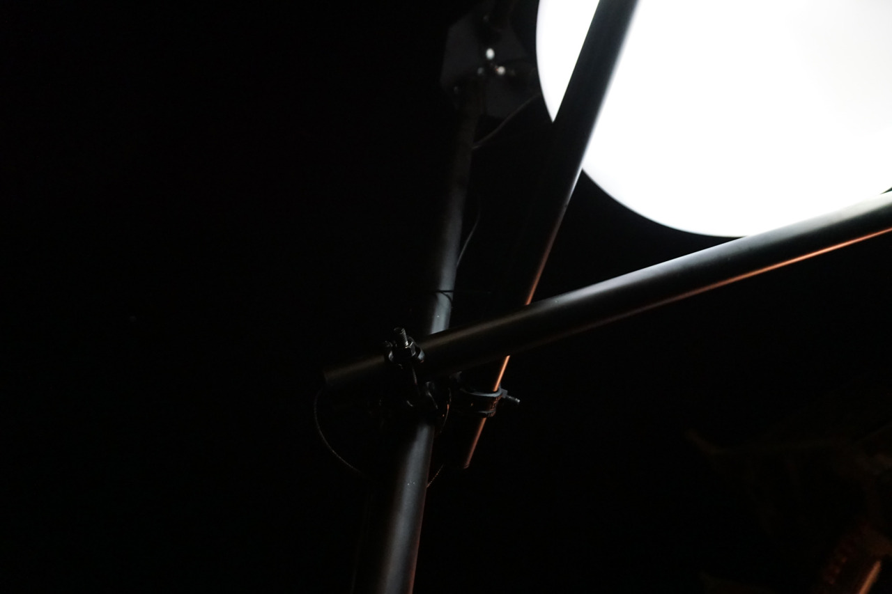
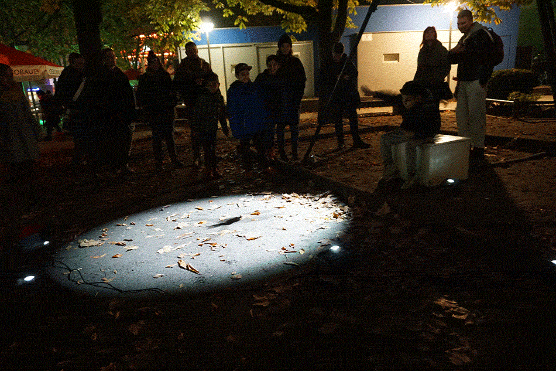
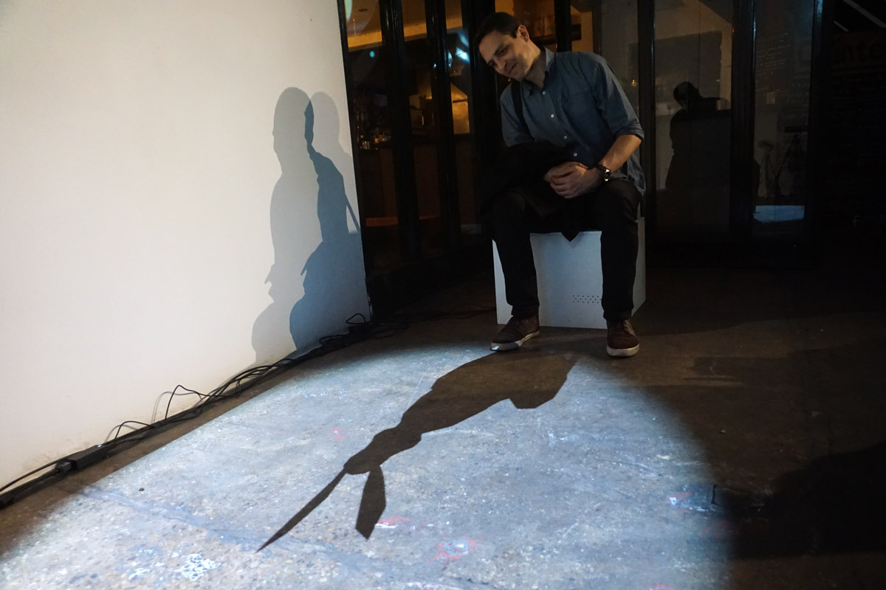

The Moon Seat - Audio-visual public installation
2016-17
Technical lead, sound design

The Moon Seat is a playful installation that entertains our inner child whilst simultaneously courting long forgotten childhood fears. The installation had its first public outing at the e-Luminate festival in Cambridge, UK from 12th-17th February 2016, and was located on the front lawn of the prestigious Cambridge Union Society.
- Project Website : 🔗

Audience members were invited to sit, at which point the pool of moonlight would instantly open to show their shadow. After a few seconds, their shadow would transform into an animal controlled by their bodily movements, but with a character all of its own. An ethereal generative soundtrack reacting to the user's movements accompanies the piece.

I'd worked with Alex for a long time at B-Reel, and I was very excited to be asked to get involved in his first independent installation art piece! It quickly became apparent that we were going to need some more help, so we drafted in ex-B-Reelers and good friends Yi-Wen Lin and Christian Persson to come on board.
We pulled in quite a variety of technologies for this one, including Processing (main show), NodeWebkit (gesture detection & tracking), Flash/AIR (character animation & playback) and Pure Data (generative audio & DMX control)